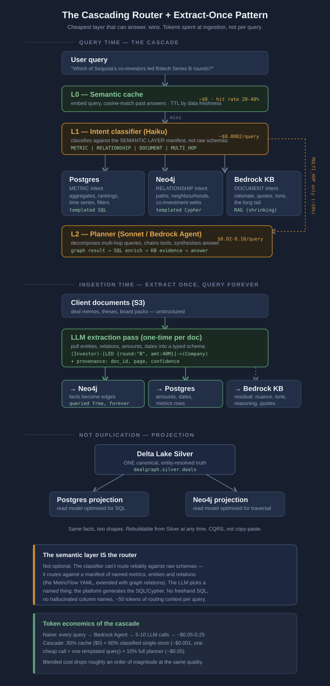
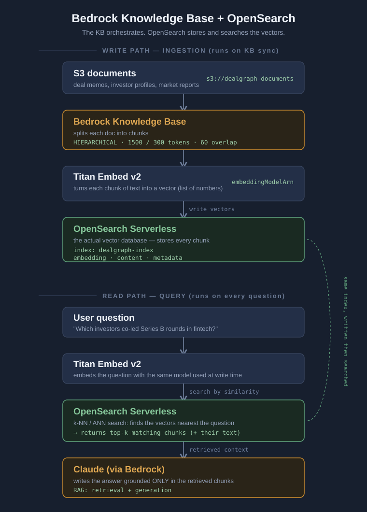

flowchart TB
Q["User question<br/>natural language"] --> LLM
subgraph menu["What the LLM is allowed to do: pick from a menu"]
direction TB
LLM["Intent classifier (Haiku)<br/>sees only the routing card"]
LLM -->|"names one item + fills its slots"| PICK["JSON: intent + target + params + filters"]
end
SL[("Semantic layer<br/>metrics.yml + relations.yml")] -.->|"generates the menu (~50 tokens)"| LLM
PICK --> COMP{"Compiler<br/>deterministic, CI-validated"}
COMP -->|"METRIC to MetricFlow"| SQL["Parameterized SQL"]
COMP -->|"RELATIONSHIP to graphflow"| CY["Parameterized Cypher"]
COMP -->|"DOCUMENT"| KB["KB retrieval call"]
SQL --> PG[("Postgres")]
CY --> NEO[("Neo4j")]
KB --> BKB[("Bedrock KB")]
classDef q fill:#232f47,stroke:#38455f,color:#eef2f8;
classDef ai fill:#2a2418,stroke:#c78a2e,color:#e0a852;
classDef sl fill:#1d2740,stroke:#44546f,color:#eef2f8;
classDef comp fill:#1a2a22,stroke:#5c9d78,color:#86c79a;
classDef store fill:#212a3d,stroke:#38455f,color:#c8d2e2;
class Q q;
class LLM,PICK ai;
class SL sl;
class COMP,SQL,CY,KB comp;
class PG,NEO,BKB store;
One semantic contract, three stores: routing metrics, graphs, and documents without letting an LLM write SQL
Data Engineering
Semantic Layer
MetricFlow
Knowledge Graph
Neo4j
LLMs
RAG
MCP
Architecture
AWS
A dbt semantic layer describes tables and compiles to SQL. GraphFlow extends it to describe a knowledge graph too, compiling to Cypher, so one governed contract spans both tabular data and a graph with no second source of truth. Built for DealGraph, an investment-intelligence platform where a single question can span an aggregate, a relationship, and a paragraph of rationale. Covers the cascading router, the extract-once ingestion pattern, the metricflow_entity join contract, a compiler that mirrors MetricFlow for Cypher, and an end-to-end trace with real code.
A little while ago I wrote about FlowProxy, a proxy that lets a BI tool query a dbt semantic layer over the PostgreSQL wire protocol, so an analyst gets a governed metric instead of a hand-rolled one. The lesson underneath it was small and stubborn: define the meaning of a metric once, and force every consumer through that definition. A tool that wraps your balance in SUM cannot change what the balance means, because the query is rebuilt from the metric name, not executed as sent.
This is the same idea, pushed somewhere harder. What happens when the question is not a metric at all.
The problem DealGraph is actually trying to solve
DealGraph is an investment-intelligence platform. It ingests the unstructured exhaust of a venture firm: deal memos, investor profiles, board packs, market reports. Then people ask it questions. And the questions do not respect the tidy boundary between a database and a document.
Consider three real ones. They look alike in the question box and could not be more different behind it.
One product, one question box, and three fundamentally different retrieval systems behind it. A metric store, a graph, and a pile of documents. The naive move is to point a big agent at all three and let it figure things out per query. That works, and it is slow and expensive and unsafe, and I will come back to why.
The move that actually works is to decide, up front, in a spec, what each store is allowed to answer and how. To make the semantic layer the thing that routes. That is the whole article.
The cascade, and why the cheapest layer that can answer should win
Here is the query-time architecture. Read it top to bottom: a question falls through layers, and the cheapest one that can answer it stops the fall.

The first thing to notice is that most queries never reach the expensive machinery. A semantic cache sits in front, embedding the question and matching it against past answers, with a time-to-live tied to how fresh the underlying data needs to be. When that misses, a small, cheap classifier decides what kind of question this is, and hands it to exactly one store. Only the genuinely hard questions, the ones that need to chain a graph walk into a SQL enrichment into a document lookup, escalate to a planner that costs real money.
The economics are the point. A naive agent hits five to ten LLM calls per query and costs somewhere between five and twenty-five cents. The cascade answers thirty percent from cache at no cost, sends sixty percent through one cheap classification and one templated query at a fraction of a cent, and reserves the five-cent planner for the ten percent that truly need it. Same answers, roughly an order of magnitude less spend. You do not save money by making the model cheaper. You save it by not calling the model when a template will do.
But none of that cascade works without the part that makes it safe, and that part is the semantic layer.
The semantic layer is the router, not a lookup table
The classifier’s job sounds simple and is easy to get catastrophically wrong. Given a question, pick which store answers it. The wrong way to do this is to hand the LLM the raw database schemas and ask it to write the query. That is how you get hallucinated column names, freehand SQL against tables the model half-remembers, and an injection surface with a chat interface in front of it.
The right way is to never let the model write a query at all. The model gets a catalog of named things, and it picks one and fills the blanks. Everything downstream of that choice is deterministic code.
The dashed line is the whole idea. The semantic layer generates the menu; the model may only choose from it. The model never touches the solid path that produces SQL or Cypher. That path is deterministic, validated code, and it is the only thing that ever writes a query.
That catalog is generated from the semantic layer. Here is the function that builds it, straight from the compiler:
def routing_card(self) -> str:
lines = ["METRICS (Postgres via MetricFlow):"]
for m in self.metrics.values():
lines.append(f" - {m['name']}: {m.get('description','')}")
lines.append("RELATIONS (Neo4j via graphflow):")
for r in self.relations.values():
ps = ", ".join(p["name"] for p in r.get("params", []))
fs = ", ".join(f["name"] for f in r.get("filters", []))
lines.append(f" - {r['name']}({ps}) [filters: {fs}]: "
f"{' '.join(str(r.get('description','')).split())}")
lines.append("DOCUMENTS (Bedrock KB): rationale, quotes, memo content, anything narrative.")
return "\n".join(lines)That is the entire context the classifier sees. A list of named metrics, a list of named relations with their parameters and allowed filters, and a one-line note that documents cover the narrative long tail. Around fifty tokens of routing context. The model reads it and returns a small JSON object naming exactly one target and its slots. It does not know the table names. It cannot know them. It picks a metric called total_invested or a relation called co_invested_with, and the platform does the rest.
The classifier’s contract is spelled out in its system prompt, and the last rule is the one that matters most:
- If confidence < 0.7, use MULTI_HOP (the planner will handle it).
- Never invent metric, relation, param, or filter names not in the catalog.When the model is unsure, it does not guess. It escalates. And it is structurally prevented from naming anything that is not in the spec, because there is nothing else in its context to name.
One semantic layer, two paradigms: tables and a graph
Here is the part I think is genuinely new, so let me say it plainly rather than leave it implicit.
The metrics half is just dbt. The metrics.yml is a standard MetricFlow spec, unchanged, and it compiles through dbt sl exactly as it always did. Investors, companies, deals as entities; total invested, deal count, average check size as metrics. Nothing exotic. That is the tabular half, and GraphFlow does not touch it.
The interesting file is the sibling, relations.yml, which teaches the semantic layer about graph shapes using the same dialect and a new grammar. This is a co-invested-with relation, one of three in the demo spec:
relations:
- name: co_invested_with
description: Investors who participated in at least one shared deal with the anchor investor
from_entity: investor
to_entity: investor
params:
- name: anchor_investor
entity: investor
required: true
filters: # optional, whitelisted
- name: round_type
maps_to: d.round_type
- name: sector
maps_to: c.sector
- name: since_date
maps_to: d.deal_date
operator: ">="
returns: [b.name AS co_investor, count(d) AS shared_deals]
template: |
MATCH (a:Investor)-[:PARTICIPATED]->(d:Deal)<-[:PARTICIPATED]-(b:Investor)
MATCH (d)-[:FUNDED]->(c:Company)
WHERE a.name = $anchor_investor AND a <> b
{filters}
RETURN b.name AS co_investor, b.id AS investor_id, count(d) AS shared_deals
ORDER BY shared_deals DESC
LIMIT $limitRead what this actually is. A named relation, its required parameters, a whitelist of filters that may be applied and nothing else, a declared return shape, and a Cypher template with two holes in it: the {filters} slot and the $parameters. The analyst who authors this decides, once, exactly which questions this relation can answer and exactly which knobs a caller may turn. Everything else is closed.
The join contract, which is the quiet centerpiece
There is one line in relations.yml that does more work than any other, and it is easy to miss:
graph_entities:
- name: investor
metricflow_entity: investor # <- the join contract
node_label: Investor
key: id # Neo4j property == silver investor_id
display: nameEvery graph entity must bind to a MetricFlow entity by name. That metricflow_entity: investor is a contract, and it is checkable in CI. It says: the id on a Neo4j Investor node is the same identity as the investor_id MetricFlow groups by in Postgres. Which means a result that comes out of the graph, carrying investor IDs, can turn around and join straight onto SQL metrics without anyone writing a join by hand.
This is what lets a single answer be half graph and half metric. The graph tells you who co-invested. The shared key lets you then ask, for those exact investors, how much did they deploy in fintech, and get the number from MetricFlow. Structure from Neo4j, quantities from Postgres, stitched on a key that a spec guarantees is aligned. Not glued together at query time by a hopeful LLM. Contracted at author time and enforced at compile time.
The compiler, which mirrors MetricFlow one level simpler
MetricFlow compiles metrics.yml into optimized SQL. The GraphFlow compiler compiles relations.yml into parameterized Cypher, and it makes three guarantees, stated in its own docstring:
"""graphflow/compiler.py
Compiles relations.yml -> parameterized Cypher.
Mirrors what MetricFlow does for metrics.yml -> SQL, one level simpler.
Guarantees:
1. Entity alignment: every graph_entity binds to a MetricFlow entity (CI-checkable).
2. Filter whitelisting: only filters declared in the spec can ever be rendered.
3. Parameterization: all values go through Cypher $params. Zero string interpolation
of user values -> zero injection surface, deterministic golden-testable output.
"""Those three guarantees are the same guarantees FlowProxy makes for a BI tool’s SQL, transplanted to a graph. The validation runs in CI and refuses to start if a graph entity binds to an entity MetricFlow has never heard of, or if a template forgets its filter slot, or if a filter declares an operator that is not on the allowed list:
def validate(self):
mf_entities = set()
for sm in self.metrics_spec["semantic_models"]:
mf_entities |= {e["name"] for e in sm["entities"]}
for name, ge in self.graph_entities.items():
bound = ge.get("metricflow_entity")
if bound not in mf_entities:
raise ValueError(
f"graph_entity '{name}' binds to unknown MetricFlow entity "
f"'{bound}'. Known: {sorted(mf_entities)}"
)And the compilation itself is where the injection surface disappears. A caller passes filter values, but the compiler only renders filters that were declared in the spec, and every value becomes a Cypher parameter rather than a spliced string:
declared = {f["name"]: f for f in rel.get("filters", [])}
fragments, bound = [], {}
for fname, fval in filters.items():
if fname not in declared:
raise ValueError(
f"relation '{name}': filter '{fname}' not declared in spec "
f"(allowed: {sorted(declared)})"
)
spec = declared[fname]
op = spec.get("operator", "=")
fragments.append(f"AND {spec['maps_to']} {op} $f_{fname}")
bound[f"f_{fname}"] = fvalAn undeclared filter is not sanitized. It is rejected. There is no code path that renders a user value into the query as text, so there is no code path to exploit.
Watching one question go all the way through
The demo traces a question that needs everything: “Which of Sequoia’s co-investors led fintech Series B rounds.” It is a graph walk, then a filter, then a join back to metrics.
The classifier sees the routing card and returns this, which is what Haiku actually produces for this catalog at temperature zero:
{
"intent": "RELATIONSHIP",
"target": "co_investors_who_led",
"params": {"anchor_investor": "Sequoia Capital"},
"filters": {"round_type": "Series B", "sector": "fintech"},
"confidence": 0.93
}It picked a pre-authored composition, co_investors_who_led, which chains the co-investment walk into a led-round walk. This is the known multi-hop, encoded once as a relation so it never has to hit the expensive planner. The dispatcher compiles it to Cypher, with the filters rendered into the slot and every value bound as a parameter:
if kind == "RELATIONSHIP":
q = manifest.compile_relation(
intent["target"], intent.get("params", {}), intent.get("filters", {})
)
return {"engine": "neo4j", "plan": q.cypher, "params": q.params}Neo4j returns co-investors and, crucially, their investor_id values. Then the enrichment step uses that shared key to go back to MetricFlow for the money:
enrich = {
"intent": "METRIC", "target": "total_invested",
"group_by": ["investor__investor_id"],
"filters": {"sector": "fintech"},
}Because graph_entity.investor binds to MetricFlow entity investor, the inv_0042 that came out of the graph joins straight onto total_invested from Postgres. The final answer is graph structure plus SQL metrics, stitched on one contracted key. And when the demo tries to sneak in a filter that was never declared:
manifest.compile_relation("led_round", {"investor": "Sequoia Capital"},
{"valuation": "> 1B"}) # not in spec
# REJECTED: relation 'led_round': filter 'valuation' not declared in specit is rejected at compile time. The guardrail is not advice. It is a wall.
Extract once, query forever
There is a second pattern in that architecture diagram, running along the bottom, and it is what makes the graph and the metrics exist at all. The documents arrive unstructured. A one-time LLM extraction pass reads each one and pulls out typed facts: this investor led this round for this amount on this date, with provenance back to the page it came from. Those facts become graph edges and metric rows. The narrative residue, the tone and the rationale that does not reduce to a fact, stays in the document store for retrieval.
The token spend happens once, at ingestion, not on every query. You pay to read a memo the day it lands, and then you query the facts it contained for free, forever, in whichever shape the question wants. A naive RAG system re-reads the same documents on every question and pays every time. This one reads them once and projects them into the store best suited to answer.
And it is not duplication. There is one canonical, entity-resolved truth in a Delta Lake Silver table, and the Postgres and Neo4j copies are read models projected from it, rebuildable at any time. Same facts, two shapes, one source. It is CQRS, not copy-paste.
A note on where the documents actually live
Because people always ask, here is the retrieval half drawn out. The knowledge base is a manager, not a database. It chunks documents, embeds them, and decides what to retrieve, but it holds no vectors itself. The vectors live in a separate store, wired in through a configuration block.

The single thing worth remembering is that the storage block is just wiring. Swap OpenSearch for Pinecone or Aurora pgvector and the flow is identical. The knowledge base orchestrates; the vector store stores and searches. Keeping those two roles distinct in your head is most of understanding it.
Why any of this beats pointing an agent at the problem
The honest alternative to all of this is a capable agent with tool access, pointed at Postgres and Neo4j and the knowledge base, left to reason its way to an answer per query. It works. I want to be fair to it, because for a genuinely novel multi-hop question, it is exactly what the L2 planner in this design falls back to.
The problem is using it for everything. It is slow, because every question becomes a multi-step reasoning loop. It is expensive, because every step is a model call. And it is unsafe in the way that matters most for a platform serving real analysts, because an agent writing its own SQL and Cypher will, eventually, on some query you did not test, name a column that does not exist or filter on a field it should not, and do it with total confidence.
The semantic contract removes that entire failure class. The model never writes a query. It picks a named thing from a catalog it cannot deviate from, and a compiler that has been validated in CI turns that choice into a parameterized query with a fixed shape. The cheap path is safe because it is closed. The expensive path exists for exactly the questions that need openness, and only those.
The difference is where the language model’s output lands. In the freehand approach it lands directly in the query, which is the blast radius. In the governed approach it lands in a name, and a compiler stands between that name and the query.
flowchart LR
subgraph free["Freehand: the model writes the query"]
direction TB
FQ["Question"] --> FLLM["LLM sees raw schemas"]
FLLM -->|"emits SQL / Cypher text"| FEXEC[["Executed as sent"]]
FEXEC --> FRISK["Hallucinated columns<br/>injection surface<br/>silent wrong answers"]
end
subgraph gov["Governed: the model picks a name"]
direction TB
GQ["Question"] --> GLLM["LLM sees the named catalog"]
GLLM -->|"emits a name + slots"| GCOMP{"Compiler<br/>whitelist + params + CI"}
GCOMP --> GSAFE["Fixed query shape<br/>no injection surface<br/>undeclared filter rejected"]
end
classDef bad fill:#2a1a1a,stroke:#b45454,color:#e8b0b0;
classDef good fill:#1a2a22,stroke:#5c9d78,color:#86c79a;
classDef n fill:#232f47,stroke:#38455f,color:#eef2f8;
class FQ,GQ n;
class FLLM,FEXEC,FRISK bad;
class GLLM,GCOMP,GSAFE good;
The model is equally capable in both. The only thing that changed is whether its output is a query or a choice. A wrong choice is a bad row you can log and cap; a wrong query is an incident.
It is the same trade FlowProxy makes for a BI tool, extended across three stores. Decide the meaning once, in a spec. Compile it, do not interpret it. Let the model choose from the menu, never write the recipe. The guardrails live in one place, in YAML, in git, and nothing that queries the platform can get around them, because there is no path that does not go through the compiler.
That is the pattern. One semantic contract stretched over two paradigms, tabular and graph, with documents on the side; three stores under a single governed vocabulary; a cascade that spends tokens where they earn their keep; and an ingestion step that pays the extraction cost once. The metrics half is dbt you already know. The graph half is a hundred lines that borrow its discipline and teach the semantic layer to answer questions it could not reach before. The rest is refusing, everywhere, to let a language model improvise against your data.